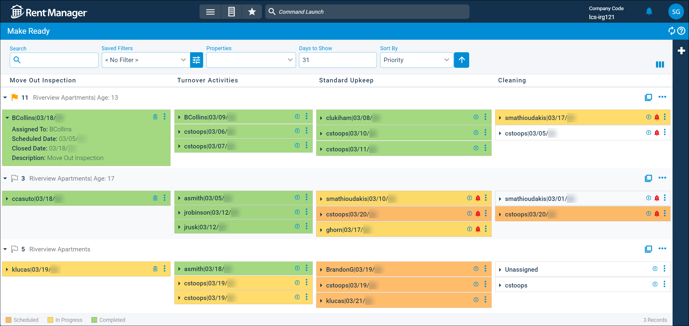
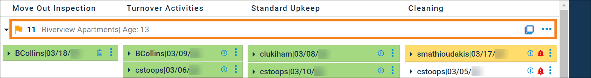

Make Ready Board (Page)
After tenants move out of units, it takes time, effort and money to make those units ready and available for the next tenant. The Make Ready page helps streamline the process of preparing vacant units for occupancy and provides an up-to-date visual representation of the unit turnover process. The Make Ready page displays a board of units that are assigned a make-ready process and color-coded statuses for the associated service issues and inspections.
When a unit is added to the board, you select a make-ready template for that unit. This determines the issue(s) and/or inspection(s) that are generated for the unit as well as the columns for each action needed for the unit's make-ready process. You can click any issue or inspection on the board to view additional information about the task, or add additional service issues and inspections.
Related Privileges
| Group | Privilege | Column |
|---|---|---|
| Properties/Units | Make ready board | View |
For more information, refer to Control User Access.
To access the Make Ready page, go to  arrow_forward Services arrow_forward Make Ready arrow_forward Make Ready Board.
arrow_forward Services arrow_forward Make Ready arrow_forward Make Ready Board.

Each column represents a make-ready action that is part of the make-ready template(s) selected for the processes on the board. The columns that display vary depending on the processes that display and their selected make-ready templates.
Filter Options
The following filtering options are available on this page.
| Option | Descriptions | |
|---|---|---|
|
Search |
Enter the desired search criteria to display results containing the entered criteria. |
|
|
Saved Filters |
Use the |
|
|
Properties |
Select the properties to include on the board. More Information This field populates only with the properties to which you have access. Your access to properties can be managed from your user account or on the property's details page. For more information, refer to Limit Access to a Property. |
|
|
Days to Show |
Enter the number of days (0–31) that make-ready processes should remain on the board after completion. If 0 is entered, make-ready processes are removed from the board once they are completed. |
|
|
Sort By |
|
Color Code Information
Each make-ready action item is color coded to help you identify its current status at a glance. The color coding information is described below.
| Option | Description |
|---|---|
|
Scheduled |
Actions display in orange when they have been scheduled to be addressed, indicating that the work is upcoming. If the make-ready action is an inspection, it displays as orange when it has a Scheduled date that is on or after the Inspection Date. If it is a service issue, it displays as orange when it has a Scheduled assigned that is on or after today's date. If there is no scheduled date or the date is before today's date or the Inspection Date, the action displays no color. |
|
In Progress |
Actions display in yellow when the work has started on the associated issue or inspection. If the make-ready action is an inspection, it displays as yellow when the Status is set to In Progress. If it is a service issue, it displays as yellow when it has a Status selected designated as an In Progress status in system preferences. Related Preferences You can determine which issue statuses count as an in-progress status for the issue, indicating the service issue is being worked on. For more information, refer to Make Ready (System Preferences). |
|
Completed |
Actions display in green to mark that the tasks have been completed on the associated issue or inspection. The date on which the inspection or service issue was marked as Closed displays. If the make-ready action is an inspection, it displays as green when the Status is set to Closed. If it is a service issue, it displays as green when the Closed field is checked and has a date entered. |
Icon Information
Make-ready action items may display icons that provide further information about the item. The icons are described below.
| Icon | Description | ||||||
|---|---|---|---|---|---|---|---|
|
Service Issue |
Related Privileges
For more information, refer to Control User Access. Indicates the item is a service issue. Click the icon to open the issue's details page. |
||||||
|
Inspection |
Related Privileges
For more information, refer to Control User Access. Indicates the item is an inspection. Click the icon to open the inspection's details page. |
||||||
|
Due Date Passed |
This icon displays for issues that have Due Date entered that has passed, indicating the action item is behind schedule. |
Make-Ready Process Information
The make-ready process for each unit being turned over displays in a list on the board. You can view information about each action item in a process, as well as perform actions for each process or action in the list. You can also customize the information that displays in a process's header and expand each item to view more details about the inspection or issue without leaving the page.
Process Headers
For each active make-ready process, a header displays information about that process and allows you to take quick actions. Click  to open the make-ready process's details page.
to open the make-ready process's details page.

By default, the header displays whether the process is high priority, the unit name, property name and how long the process has been active. To customize the information that displays on the header, click  . The columns that can be added to the process header are described below.
. The columns that can be added to the process header are described below.
| Default Columns | Description |
|---|---|
|
Property |
The full name of the unit's property, as entered on the property's details page. |
|
Move Out |
The date on which the unit's current or last tenant is scheduled to vacate the unit, as entered on the tenant's Lease Details pop-up in the Move Out field. |
|
Next Move In |
The date on which a tenant is scheduled to move into the unit, as entered on the tenant's Lease Details pop-up in the Move In field. Prospect accounts that have reserved this unit do not display date information here. |
|
Age |
The number of days the process has been active since its Start Date. |
|
Available Columns |
Description |
|
Comments |
The text entered in the Comments field of the process's details page. |
|
Completion Date |
The date on which the last action of this make-ready process was closed. This information displays only if the make-ready process is completed. |
|
Create Date |
The date on which the make-ready process was first created and saved in Rent Manager. |
|
Create User |
The username of the user who created the make-ready process. |
|
Expected MO |
The previous tenant's expected move out date for the unit being made ready. |
|
Manager |
The first name of the user overseeing the make-ready process, as selected on the process's details page in the Manager field. |
|
Progress |
The current progress of the make-ready process as a whole, in xx/yy format. The number of action items completed (xx) out of the total number of action items in the process for the unit (yy). For example, 2/6 means that two action items have been completed out of a total of six action items. |
|
Property Short Name |
The abbreviated name of the unit's property, as entered on the property's details page. |
|
Start Date |
The date that the make-ready process is scheduled to begin, as set on the process's details page in the Start Date field. |
|
Unit Addresses |
The full address marked as Default for the unit, as entered on the unit's details page. |
Process Actions
Related Privileges
| Group | Privilege | Column |
|---|---|---|
| Properties/Units | Make ready process | View, Edit |
For more information, refer to Control User Access.
Various actions can be taken on a make-ready process by clicking on the right side of the process's header. The available actions are described below.
| Action | Description | |||||||||||||||
|---|---|---|---|---|---|---|---|---|---|---|---|---|---|---|---|---|
|
Mark as High Priority |
Pins the process to the top of the list. Processes marked as high priority are indicated with the icon. |
|||||||||||||||
|
Delete |
Related Privileges
For more information, refer to Control User Access. Deletes this process and removes it from the board. If issues or inspections are items in the make-ready process, a pop-up asks if the associated issues and inspections should also be deleted. To delete the inspections and issues along with the process, click Yes. To delete the process and unlink the issues and inspections without deleting them, click No. Related Privileges
For more information, refer to Control User Access. |
|||||||||||||||
|
Make Ready Detail Report |
Generates a detailed report of information for this process. |
|||||||||||||||
|
Add Service Issue |
Related Privileges
For more information, refer to Control User Access. Creates a new service issue and adds it to the process. |
|||||||||||||||
|
Link Service Issue |
Adds an existing service issue to the process. |
|||||||||||||||
|
Add Inspection |
Creates a new inspection and adds it to the process. |
|||||||||||||||
|
Link Inspection |
Adds an existing inspection to the process. |
Item Actions
Various actions can be taken for each action item in a make-ready process by clicking  on the top corner of an item in the process. The available actions are described below.
on the top corner of an item in the process. The available actions are described below.
| Action | Description | |||||||||
|---|---|---|---|---|---|---|---|---|---|---|
|
Move To |
Moves the item to a different make-ready action column selected by the user. |
|||||||||
|
Remove |
Deletes the item from the process. If issues or inspections are associated with the item, a pop-up asks if the issue or inspection should also be deleted. To delete the inspection or issue along with the action item, click Yes. To delete the action item and unlink the issue and inspection without deleting it, click No. Related Privileges
For more information, refer to Control User Access. |